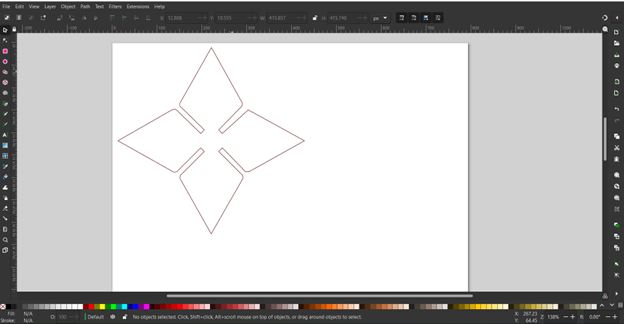

Paisley Maschmeier's Assignment 1: Modelling and Laser Cutting
For this assignment I wanted to make a kit that looked like a bunch of ninja stars!
Part 1: Modelling
I started by using my digital caliber to measure the thickness of the cardboard I intended to laser cut. I measured the cardboard to be 3.0 mm thick, or 0.12 inches.
Next I needed to design the model of my piece in Rhino. I decided to use the millimeter measurement for my 3d model because I planned on using Inkscape to export
the model into a vector illustration, and Inkscape uses millimeters. Download my model here:
Ninja Star Model
This is was the model looks like:
After I finished the 3d model, I exported it using Inkscape from a .3dm file to a .dxf file and went to the MILL to lasercut my pieces.
Part 2: Illustrating
After arriving at the MILL and checking out an Macbook, I used a flashdrive to transfer my files from my computer to the school computer.
Upon opening my .dxf file in Adobe Illustrator, it did not look right at all. My beautiful ninja star was not there.
This is what the incorrect illustration looked like

After thinking about the problem for a minute, I realized that it looked this way because my model was oriented incorrectly. The 2d vector illustration was showing the top of the ninja star instead of the front, where you could actually tell was it was. Using the school computer, I reoriented the model in Rhino and reexported the file from .3dm to .dxt, and then opened the file on Adobe Illustrator. Using millimeters wasn't an issue because Illustrator has a millimeter measurement option. I made sure to scale the vector illustration so that it maintained the proper size (110mm x 110m). I also set the stroke to 0.01 and color to black (0, 0, 0), as was instructed by a MILL staffmember.
This is what the vector illustration done correctly looked like
Note: The stroke in this image is thicker than the stroke of the actual .dxf file, because when I screenshotted it with the correct thickness you could not see the image very well. Below is the file with the correct stroke size.
.dfx file: Ninja Star Vector
.ai file: Ninja Star Adobe*
*I'm not sure if this file is the correct one, I might have saved the Adobe Illustrator file on the school computer by accident, and I can't check this file because I do not have Adobe Illustrator. Just know that it looks the same as the .dxf file.
Part 3: Laser Cutting
When my files were finally formatted correctly, I went over to the laser cutter to begin making my ninja stars. I decided to do a test cut on some of the MILL's scrap cardboard. I set the preferences to 25 speed, 100 power, and 50 frequency. I chose these settings because the "Laser Cutting" slideshow from class reccomended speed: as fast as possible and power: as little as possible. I left the frequency at 50 because that's what it was already on.
These are the settings I used for my laser printing
Before any printing, placed the scrap cardboard appropriately and set the focus. Then, I sent my file to the printer!
(The laser printer did not actually work at first. A staffmember came over and did some stuff to it and then it worked. I don't know what was wrong or what the staff member did to get it working.)
When I saw my test print was successful, I knew it was time to move on to printing all the pieces. I used the same preference settings as before because it cut through the cardboard and did not light anything on fire. I copied the ninja star vectors many times oveer the Illustrator canvas so that I'd be able to print multiple ninja stars at once. And with that, I printed out 30 ninja stars without any issue.

Part 4: The Kit
I was able to use all the ninja stars to make this structure, and it held up even under light shaking. Each piece was supposed to look like a ninja star, but because of the blue cardboard I used they kind of ended up looking like Navi, the fairy from The Legend of Zelda. Overall, I am happy with how everything worked out, and I'm very glad I learned how to use the laser printer!